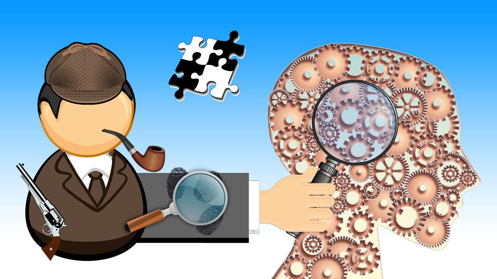

Projects
CluEvo: solving the enigma with evolutionary psychology
(pdf)
Evolutionary psychology investigates animal and human everyday behaviours by applying the biological concept of evolution to cognitive systems. Why do cats seem to be afraid of cucumbers? Why do we always find babies so cute? Do goats communicate? From where arise the differences between males and females? What drives the hazing behaviour? Why are social networks so addictive? This field of research is not only essential to better understand how beings work from the individual point of view but also to study the rules that govern group dynamics and interactions between members of a community. Thus, this knowledge can be applied to adapt public policies and increase their efficiency: evolutionary psychology gives some insights to enhance educational tools and environment, to reduce fraud and promote tax payment, to increase vaccine acceptance and improve global health, or even to encourage responsible and respectful behaviour towards the planet!
In this project, you will investigate a mysterious murder that happened in the countryside of Northern Croatia several years ago. Some investigations directed by the local police officer quickly led to send a presumed perpetrator to jail. However, his lawyer still claims that he is innocent and recently asked to reopen the case. You will be unrolled in a professional team of scientific investigators specialized in human behaviour and become familiar with several research methods. Discovering and using many evolutionary psychology concepts such as food cognition, trust, reputation, cooperation or even disgust, you will investigate further and solve the case. What can we tell about the victim’s past? What is the precise motive for the crime? Which weapon has been used? Who is the murderer?
Camille Lakhlifi
Paris Descartes University, France
After obtaining her Bachelor of Biology, Camille is currently finishing her master’s degree in Cognitive science in Paris through an internship in the French railway company, investigating time perception while train travelling. Indeed, she is interested in applying the research concepts of cognitive science, especially evolutionary psychology, to everyday life and situations, enhancing public policies for instance. She is also involved in several associations promoting science popularization! She is passionate about travelling, sport, dance, gospel and… eating (miom).
Brain maps perception, not reality
Your brain is locked in a dark box without windows: your head. However, it’s the main actor in your everyday life. It’s the one that enables you to say you’re looking at a tree when walking into a forest. It’s the one that enables you to know that strawberry tastes the way it tastes and that you would rather be eating this red fruit than the broccoli plate your mother is putting in front of you.
Your brain constantly gives you a representation about an external world it has never been in direct contact with. This is possible thanks to your senses – vision, touch, hearing, taste – which are constantly providing information about this world. However, how does your brain interpret it? Senses are not completely reliable. Seeing the same item ten times never gives you the same neural information, and this is true for every sensory modality.
Well, the answer is in the title. What you know about the external world is only an interpretation based on your previous experiences and what sensory information you’re receiving. You’ll never see the real world, and you’ll never taste the real strawberry. Have you ever been tricked by optical illusions? Have you ever failed to reach an object? All these are examples of errors in our perception of the world.
In this project we are going to try to understand how our brain builds a representation of the world, what kind of information it uses and how to trick it. We are going to explore the Bayesian theory about perception and you’ll discover that your brain deals with probabilities better than you do. :)
Célia Loriette
Université Claude Bernard Lyon I, France
Célia is a PhD student at Université Claude Bernard in Lyon, France. She is based at Institut des Sciences Cognitives and works on the processes underlying spatial attention in humans. She is currently trying to predict where (in space) people are intending to go based on their brain activity (it’s a bit like mind reading ;) ). Celia did her studies in Paris, and graduated from Ecole Normale Supérieure de Paris, France. Before starting her PhD, she worked at University College London on auditory perception, at Insitut Pasteur in Paris on olfaction and at EPFL in Lausanne, Switzerland, on rehabilitation after hemi-paralysis. Célia is passionate about understanding how the brain interacts with the world and will try to share with you a bit of her enthusiasm! In her free time, Célia is a sport fanatic, plays badminton and does long distance running.
Markov Chains
(pdf)
There are many processes continuously happening around us, which may be physical, evolutionary or social. Very few of those are deterministic, meaning we can calculate exactly their outcomes; instead they are usually random or probabilistic. Markov chains are very special sequences of random events: those in which future outcomes depend solely on the present state. For example, in a stock market, prices tomorrow are only affected by prices today, not a week or month ago. Because of their simplicity and great results obtained from the theory of Markov processes, they are widely used to model phenomena in chemistry, biology, economy and even in weather forecasting.
During our project in Požega we will explore mathematical foundations of this theory and learn how to use it in modelling real-world phenomena. We are going to use a lot of fancy advanced math topics, such as probability theory and algebra, to help us make plausible predictions about various processes, including thinking of AI robots!
Ivan Miošić
University of Zagreb, Croatia
Ivan grew up in a small village on the Croatian coast, in Dalmatia. Very early on, his family noticed his interest and talent in science, especially mathematics, so it wasn’t much of a surprise that he chose Gymnasium in Ploče as his high school. He absolutely rocked at the “Matura” (high-school graduation) exams and got a chance to become a student of mathematics at the Faculty of Natural Sciences and Mathematics in Zagreb. Ivan is currently in the final year of the Undergraduate study in Mathematics.
Except doing his best to be an excellent student, Ivan is also always trying to earn some extra money by doing various jobs. His day is incomplete without reading for at least half an hour, so he always carries a good book with himself. Rowing is his greatest passion outside the academic environment, since he deeply enjoys the sense of freedom, bravery and friendship it produces. At the moment, Ivan is very interested in Machine Learning, Big Data and AI, and their connection to math.
Machine learning and cryptocurrency trading - or how to lose money quickly
Machine learning is at the verge of penetrating every aspect of our daily lives and has, hence, experienced tremendous attention from the media and the general public, alike. Recent advancements in the field have shown that machines are capable of outperforming humans on tasks that range from image classification to translating text from one language to another one. Another hot topic, at the moment, are so-called cryptocurrencies, of which Bitcoin is the most (in)famous one. They promise decentralized means of payment that are not controlled by any government or institution. The unregulated nature of the crypto-market makes it highly volatile and super-difficult to predict future price movements.
In this project we are going to apply well-known machine learning algorithms to the task of predicting the cryptocurrency market. We are going to investigate algorithms and see whether they are applicable in the context of trading crypto-coins. Furthermore, we are going to deploy a trading algorithm on a real-world cryptocurrency trading platform and see that it is quite a challenging task to consistently outperform the market. Building an algorithmic trading system based on machine learning techniques is an interesting intellectual challenge, but is it of any benefit to the society if some of the brightest minds of our generation spend their brains on it? In order to answer this question we are also going to discuss the usefulness of machine learning applied to specific domains and in general.
Pedro Zuidberg Dos Martires
KU Leuven, Belgium
Pedro is currently a PhD student at the KU Leuven in Belgium. He works on the interface of robotics and artificial intelligence. Prior to joining the AI lab at the KU Leuven, he studied physics in Vienna, Lisbon and Amsterdam. He is also interested in the social and philosophical consequences of artificial intelligence. In his free time, Pedro enjoys traveling, sports and binge-watching TV shows.
The two-front war against bacteria
Bacteria were among the first life forms to have appeared on Earth and still, they grow all around us: they are present in soil and hot springs, but also in the human body where they create our human flora. According to current studies we have slightly more bacterial cells than human cells. Although several species are pathogenic, and rather our foes than friends, they can cause serious infectious diseases. The different type of phagocytes as members of the human innate immune system fight in the first line against the pathogens. During an infection, they are able to capture, engulf and digest the harmful bacteria. However, in some cases when we need to apply an antimicrobial treatment, it is challenging to identify the bacterial strains and determine quickly and precisely the antibacterial effect of the antibiotics.
Within the frame of this project we will examine these aspects of the fight against bacteria. The first aim of the project will be to identify and differentiate bacterial strains using basic microbiology techniques like staining methods, growing tests and some biochemical reactions. Then, we will prepare antibiograms to determine their sensitivity to common antibiotics by gold standard methods and also by following the kinetics of their growth. Finally, we will investigate experiments with neutrophil granulocytes, and examine their bactericidal activity in different conditions.
Viktória Szeifert
Semmelweis University, Hungary
Viktória is a pharmacy student at the Semmelweis University. She also works as a research student at the Institute of Physiology, where she examines different extracellular vesicle populations derived from neutrophil granulocytes, and, for instance, their antibacterial effect. In 2010, Viktória was also a participant of the Summer School of Science, and as a milestone in her life, she fell in love with microbiology there. After being a project leader last year at S3, she is back again this year to share her enthusiasm.
Metallic materials – from supercomputers to suspension bridges
Materials have always been driving the evolution of humankind, from the Stone Age through the Bronze and Iron Ages all the way to the Silicon Age we are living in now. Materials are everywhere around us and material scientists tackle problems ranging from high strength steel for aerospace industry through materials with special electrical or magnetic behavior to super soft gels for targeted drug delivery.
Metal materials are used for a wide range of applications: in construction, automotive and aerospace industry, electronics and biomedical applications. There are many challenges in finding new materials as well as selecting optimal materials for certain applications. Researchers need to connect material composition and microstructure to their physical properties in order to understand their relation, considering financial costs and the physical and chemical durability. You all have seen corroded parts on your bikes, cars or houses. Have you ever wondered, why your beautiful bike or car became covered with ugly rust? Iron, used for manufacturing, reacts with water in the atmosphere and turns from metallic Fe to combined oxide-hydroxide. This leads to the loss of mechanical properties, which can eventually lead to failure. In history we have many examples where a bad choice of materials or even well-chosen materials with wrong processing led to accidents that cost a lot of money or lives. Wrecked ships, collapsed bridges or crashed airplanes are fatal accidents reminding us of the importance of understanding materials.
During this project, we will learn basic methods of analyzing materials. Working with samples ranging from conventional steel to high-tech aerospace industry materials like Aluminum or Titanium, we will learn how to connect the composition of materials to their behavior, test materials by different methods and learn how to choose the right material for a given application. We will also try to understand the physical background and the main principles governing their behavior.
Vladimir Vojtěch
University of Chemistry and Technology Prague, Czech Republic
Vladimir did his Bachelor in Materials for Automotive Industry at the University of Chemistry and Technology in Prague. He continued his Master’s degree at the same institution focusing on Metal Materials, as he found those most interesting. During his Master’s Vladimir spent one year at ETH Zurich and did his Master’s Thesis at NTU Singapore. After graduation he is going to come back to Switzerland and do his Ph.D. at ETH Zurich, focusing on studying materials for future fusion reactors and novel magnetic materials. Beside his passion for science, Vladimir is a very socially active person, spending most of his free time with his friends. He always enjoys good food and when alone, he occupies himself with reading a nice book.
Workshops
Innovation lab: EOG project

The Innovation Lab of Faculty of Engineering at KU Leuven in Belgium is an initiative to enthuse high school students to become engineers and scientists by giving them a chance to build an actual real-life device.
This year, thank to collaboraton with KU Leuven, we will once again host a projects developed within Innovation Lab, entitled EOG project: Build an electrooculograph eye motion sensor to control a device. This device is particulary useful for patients with motor neuron disease, such as Stephen Hawking, who cannot control their arm muscles precisely, making it hard to steer a wheelchair or control a PC mouse. In this project, the students develop their own hardware to measure the bio-potential present around the eye, decide how to translate the analog signal to digital, design a smart algorithm to recognise looking left, right, up and down, and, finally, design a game where a wheelchair moves through a maze, controlled by their own eye movements.
Workshop leader: Pedro Zuidberg Dos Martires, KU Leuven, Belgium
RESEARCH SWAPSHOPS
MACHINE LEARNING AND GAME THEORY - OR HOW TO TRAIN COMPUTERS TO FOOL YOU
Machine learning is all the rage nowadays in various industries and the general public. Not without reason, of course: it has been shown that machines can outperform humans on various tasks such as understanding the content of an image, translating languages, medical diagnostics and many more. Although this is going to tremendously change our lives, this is still a mostly unexplored territory with many problems yet to be solved. In this swapshop we are going to use a simple two-player decision-making game, which will guide you through the process of using machine learning to outperform humans. We are going to analyse human performance while playing the game, try to beat it with human engineered rules, and at the end, try to train the computer to outperform humans and compete against it.
Swapshop leader: Ivan Jurin, Photomath, Croatia
What happens after death? - Physical changes to the human body
Despite the efforts of modern science and medicine, death is still an inevitable (and natural) part of life. Whether it’s death by natural causes or (more often) murder, dead bodies have found their way into our homes – through crime TV shows that are present on every channel. In this workshop you will get the chance to find out how much of what we see on TV is true, also to see for yourself what’s it like to be a medical examiner and face questions such as how long ago did a person die or was the body moved?
Swapshop leader: Lavinia Mehinović, University of Zagreb, Croatia

Enzymes – what they do and how they work
Life on planet Earth comes in various shapes and sizes and a functional organism is one of the most complex things to consider. Two processes are crucial: self-replication and catalysis of chemical reactions. We will learn about enzymes, biological catalysts which enable organisms (including you) to be efficient, quick and selective when it comes to metabolic reactions. The knowledge of enzymes and how they work has a tremendous application. For example, in medicine – drugs are constructed to interact with enzymes because a lot of diseases are caused by deficiency or excessive activity of one or more enzymes in a specific pathway. Moreover, enzymes make it possible for us to digest carbohydrates and proteins that we consume daily, that’s why we will tackle mechanisms of digestive enzymes. We will spectroscopically monitor enzyme kinetics, through which we will get to know Michaelis-Menten equation, probably the most famous model of enzyme kinetics.
Swapshop leader: Mihaela Mihaljević, University of Zagreb, Croatia

The similarities between a drunken physicist and financial markets
There are many processes in science (and everyday life) which cannot be predicted with absolute certainty. The reasons for this are numerous, and sometimes we simply do not have enough information about the systems we want to study. The idea of this workshop is to see how we can we learn something in the situations where we lack certain information. This kind of situations happen often in physics, but also, for example, in financial markets where things happen at random. The methods for dealing with such problems are the same in all situations and are the main topic of this workshop. Students will learn the basics of these methods and use them on simple models.
Swapshop leader: Grgur Šimunić, Ruđer Bošković Institute,Zagreb, Croatia
Operating principle and construction of a simple electromotor
Have you ever thought of the way motors in cars work? How about electric motors used in public transportation? One of the most important inventions beneficial to the whole mankind is actually electric motor. Its value is in converting electrical energy into mechanical, which is crucial for setting the machine in motion. In this swapshop, the way electromotors work will be introduced. Furthermore, the construction of simple electromotor will be presented so students will be able to build it on their own. Above all, students will become familiar with terms such as electromotive force, abbreviated emf, developed by a source of electrical energy, commutator which is the reverse of electric motor and the basics of electromagnetism in order to develop the sense of physical background behind the whole story.
Swapshop leader: Mateja Batelić, University of Zagreb, Croatia

Faraday Heaping – self-assembly of granules into heaps
Granular dynamics is a field of physics which deals with small loose materials such as pebbles, sands, cereals, etc. These materials exhibit a range of different behavior, behaving sometimes as a solid body and sometimes as a fluid. Understanding the behavior of granules is of particular importance to industry (ex. transportation and processing of grains) and geology (ex. behavior of dunes). In this swapshop, we will examine more closely the phenomenon of Faraday heaping: sand aggregating into heaps when subjected to low-frequency vertical oscillation. We will try to reproduce the phenomenon and discuss its cause.
Swapshop leader: Magdalena Živković, University of Manchester
, UK
Lectures
Lecture schedule
August 10, 2018
Ivančica Bogdanović Radović (Ruđer Bošković Institute, Croatia): A view in the exciting world of molecules – from art to forensics
Lecture video
August 12, 2018
Ena Šelendić (University of Zagreb, Croatia): Career booster: Talk nonviolently to me
Lecture video
August 14, 2018
Lorenzo di Michele (University of Cambridge, UK): Building at the nanoscale with DNA bricks
Lecture video
August 16, 2018
João Portela Gama (University of Porto and INSEC TEC, Portugal): Evolving social networks: trajectories of communities
Lecture video
August 17, 2018
Arnold O. Benz (ETH Zurich, Switzerland): The formation of stars - what we know and what we don't
Lecture video
August 17, 2018
Iva Dasović (University of Zagreb, Croatia): Should you be afraid of earthquakes?
Lecture video
About the lecturers
Ivančica Bogdanović Radović
Ruđer Bošković Institute, Croatia
Dr. Ivančica Bogdanović Radović is a senior scientist in the Laboratory for Ion Beam Interactions at the Ruđer Bošković Institute in Zagreb. Croatia. She is Management Committee member for the COST Action CA16101 MULTi-modal imaging of FOREnsic SciEnce Evidence (MULTI-FORESEE) - tools for Forensic Science whose main objective is to promote innovative, multi-informative imaging solutions/technology to analyse forensic evidence which include fingermarks, hair, paint, biofluids, digital evidence, fibers, etc. Alongside MULTI-FORESEE action she is a project leader of the HrZZ project Development of the capillary microprobe for MeV SIMS with application on analysis of biological samples.
Ena Šelendić
University of Zagreb
Ena is a graduate student at the Faculty of Economics and Business, University of Zagreb. She has completed the Peace Studies program at the Center for Peace Studies Zagreb, which promotes engagement for non-violent social change. Her professional interests include public relations, advertising and project management. At this year's S3++ camp, Ena's wish is to provide motivation and direction for the professional development of high school students, and to point out the importance of communication skills in the STEM areas.
Lorenzo di Michele
University of Cambridge, UK
Lorenzo Di Michele is an exceptional young scientist who gained his PhD in Physics at the University of Cambridge and Corpus Christi College, where he worked on multicomponent amorphous phases of DNA-functionalised colloids. Currently, he is affiliated as a Research Fellow in Biological and Soft Systems Sector at Cavendish Laboratory, University of Cambridge and some of his active projects include: artificial DNA receptors for signal transduction across biological membranes, 3D Networks of DNA nanostructures as cell-organelle mimics, DNA-mediated fusion of live biological cells and liposomes for delivering gene-editing.
João Portela Gama
University of Porto and INSEC TEC, Portugal
João Gama is Associate Professor of the Faculty of Economy, University of Porto. He is a researcher at LIAAD - INESC TEC, the Laboratory of Artificial Intelligence and Decision Support of the University of Porto. He got the PhD degree from the University of Porto, in 2000 and has worked in several National and European projects on Incremental and Adaptive learning systems, Ubiquitous Knowledge Discovery, Learning from Massive, and Structured Data, etc. He is author of several books in Data Mining qand authored a monograph on Knowledge Discovery from Data Streams. He also authored more than 250 peer-reviewed papers in areas related to machine learning, data mining, and data streams.
Arnold O. Benz
ETH Zurich, Switzerland
Arnold Benz studied physics at ETH Zurich. After gaining his Master degree, he did his Ph.D. at Cornell University, NY, USA, with Thomas Gold on the acceleration of the solar wind. In 1972, he moved back to ETH where he was appointed professor in 1993. His interdisciplinary work on science and religion was awarded by an honorary doctor of the University of Zurich. His achievements include the first detailed survey and interpretation of solar flare radio emissions in decimeter radio waves, theory for particle acceleration in flares, and the relation of thermal X-ray and non-thermal X-ray emissions of solar and stellar activity.
Present research focuses on star and planet formation using data of the Herschel Space Observatory and on high-energy diagnostics of solar flares.
Iva Dasović
University of Zagreb, Croatia
Iva Dasović is a physicist-geophysicist specialised in seismology. She graduated and earned her PhD at the Department of Geophysics of the Faculty of Science at the University of Zagreb where she also works. She mostly studies how the seismic waves lose their energy while travelling through the lithosphere and tries to learn something about the medium’s structure and characteristics from it. Her interest is focused on the Dinarides, the Adriatic microplate and the Pannonian basin and their interaction because it’s interesting and full of unresolved issues. That’s why she is a collaborator on the HRZZ-VELEBIT project that looks into the structure and (lack of) seismicity in the Mt. Velebit and Lika area. Iva is also very active in teaching to the students and in popularization of science and geophysics to all generations.